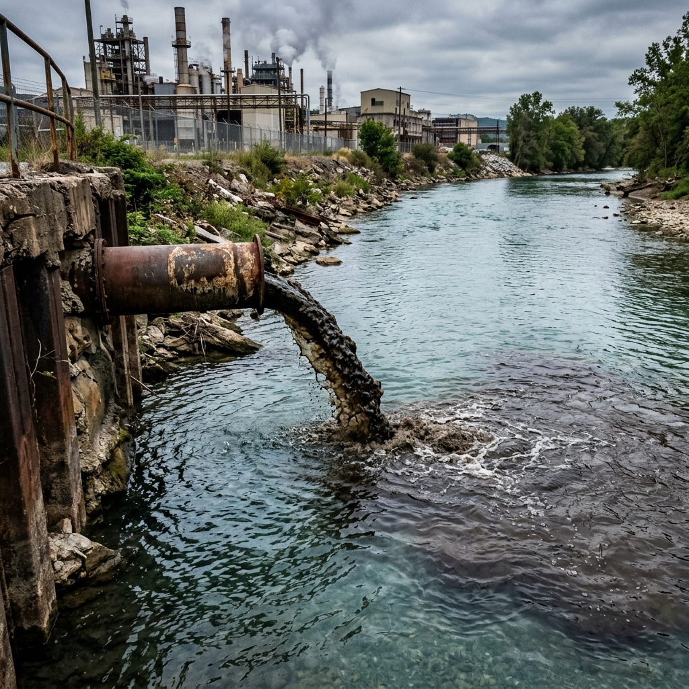
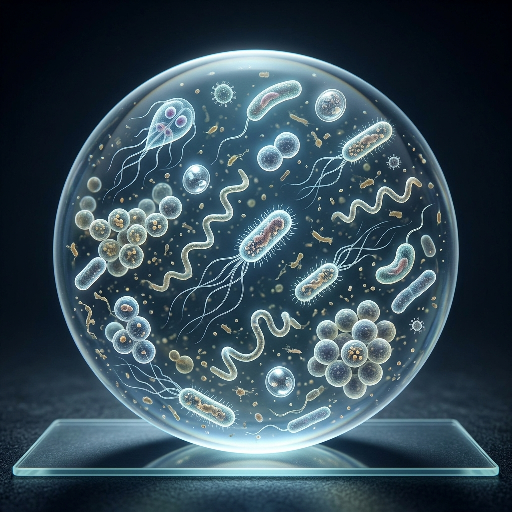

Water Contamination
Types and Impact
An overview of the major types of water pollution and their sources.
1. Chemical Contamination
Chemicals from industrial, agricultural, and domestic sources can severely pollute water bodies.
- Sources: Industrial waste, pesticides, fertilizers, heavy metals (e.g., lead, mercury).
- Effects: Toxic to aquatic life, causes severe health issues in humans.

2. Biological Contamination
The presence of harmful microorganisms (pathogens) in water.
- Sources: Untreated sewage, animal waste, agricultural runoff.
- Effects: Causes waterborne diseases such as cholera, typhoid, and dysentery.

3. Physical Contamination
Physical debris and matter that alters the physical properties of water.
- Sources: Plastic waste, microplastics, sediment, soil erosion, and thermal pollution.
- Effects: Chokes aquatic life, blocks sunlight, alters habitats.
Warning: Microplastics are now found in almost every water source globally, posing unknown long-term risks.
4. Radiological Contamination
The presence of radioactive substances in water.
- Sources: Mining of radioactive ores, nuclear power plant leaks, natural deposits (radon).
- Effects: Highly dangerous; causes DNA mutation, cancer, and severe ecological damage.
Caution: Radiological contamination can persist in the environment for thousands of years.
Conclusion & Prevention
Protecting our water sources is critical for all life on Earth.
- Treatment: Advanced wastewater treatment facilities.
- Regulation: Stricter industrial discharge laws and agricultural practices.
- Action: Reduce plastic use, proper disposal of hazardous household waste.
"Water and air, the two essential fluids on which all life depends, have become global garbage cans." - Jacques Yves Cousteau